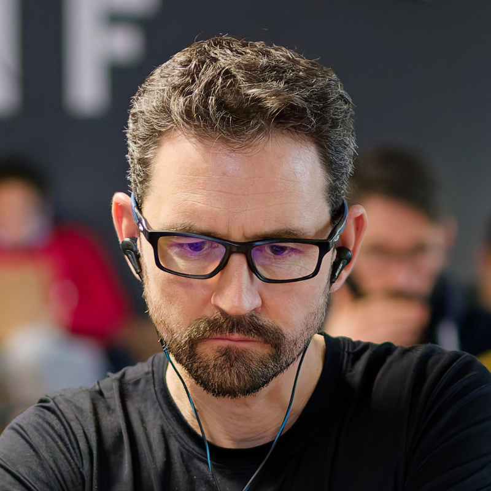

Open-source research project
AI can do more than ever. Your attention is still the bottleneck.
Hoomy is an open-source AI companion that learns what helps you thrive—and when to act, ask, or stay quiet.
ideas
agents
projects
obligations
your attention
Starting with coding agents
An attention layer across your coding agents.
Surfacing what deserves your attention next.
It will learn from the work traces they already leave behind, across machines and projects with different goals, rhythms, and constraints.
Read the video summary
Hoomy explores a lifelong companion that learns what matters while keeping you in control. Coding projects provide a focused testbed for meaningful progress with less human attention.
- Discover: group AI-agent conversations into projects, then review the map. The current private pilot retained 15 projects, producing a map the user found useful.
- Understand: next, validate project progress, blockers and possible moves alongside the person’s priorities, motivation and desired pace.
- Act & learn: later, test whether feedback on focus, delegation and intentional pauses improves future choices.
This is a research hypothesis. A useful project map does not yet demonstrate accurate understanding or improved decisions.
Built in the open
Personal AI should be open, inspectable, and under your control.
01Your raw work stays local.
02You choose what Hoomy sees.
03Anyone can inspect it, adapt it, and run the whole system themselves.
Where we are
Early, deliberately.
The work will unfold through open research, system designs, and small working experiments.

Research context
For over a decade, I’ve built AI assistants around one question: how can technology understand people while remaining worthy of their trust?
I’m Xavier Basset. Hoomy continues that work, in the open.
If that resonates, contact me at contact+hoomy (at) xbasset.com.